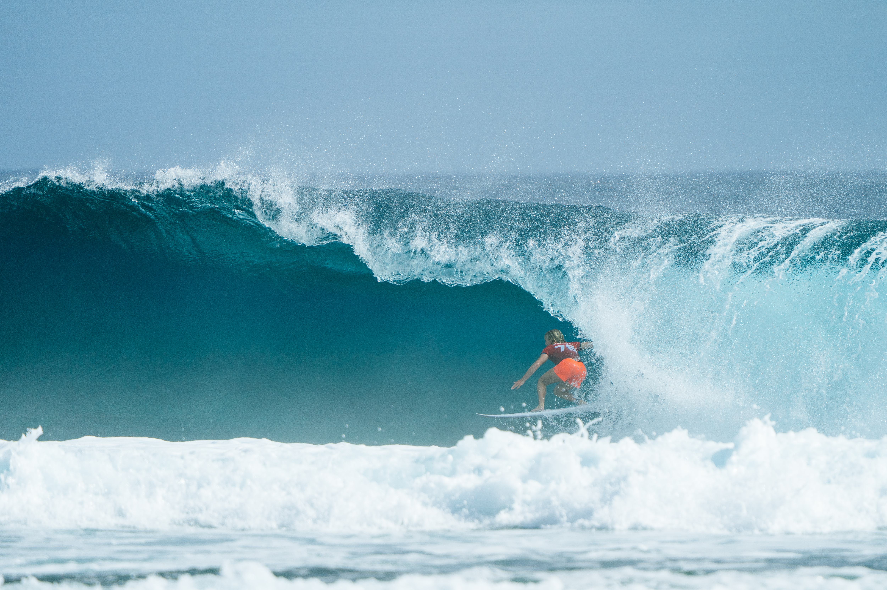

O primeiro dia do Philippines Pro, disputado neste sábado, 31 de outubro, em Cloud 9, na ilha de Siargao, nas Filipinas, reuniu uma atuação de alto nível, a eliminação de duas campeãs e candidatas importantes na corrida pelo título e uma interrupção causada pelas condições do vento. A 11ª etapa do Championship Tour da World Surf League começou com ondas tubulares e boas condições para o surfe, mas a programação precisou ser encerrada depois de apenas duas baterias da primeira rodada feminina.
A norte-americana Caitlin Simmers foi o grande destaque da abertura. Campeã mundial de 2024, ela conseguiu uma onda de 9,00 pontos e derrotou Caroline Marks. Logo depois, a portuguesa Yolanda Hopkins protagonizou a principal surpresa ao eliminar Gabriela Bryan, terceira colocada do ranking mundial.
Com os resultados, Simmers e Hopkins garantiram presença nas quartas de final e já têm confronto definido. Para os brasileiros, entretanto, o primeiro dia terminou sem estreias. Luana Silva não chegou a disputar sua bateria, enquanto toda a primeira rodada masculina permaneceu pendente. O cenário de abertura, os confrontos e as expectativas para o evento já haviam sido apresentados na prévia da WSL Filipinas 2026.
Caitlin Simmers abre o Philippines Pro com onda de 9,00 pontos
A primeira bateria da história do Championship Tour em Cloud 9 colocou frente a frente duas campeãs mundiais: Caitlin Simmers, vencedora do título em 2024, e Caroline Marks, campeã de 2023 e medalhista de ouro olímpica.
Simmers aproveitou as características da onda filipina para apresentar uma combinação de tubo profundo e uma forte manobra de finalização. A apresentação recebeu 9,00 pontos dos juízes, a maior nota do primeiro dia.
A norte-americana ainda encontrou outra boa onda, avaliada em 6,17, e fechou a bateria com 15,17 pontos.
Caroline Marks conseguiu notas de 5,50 e 3,50, somando 9,00 pontos. O resultado foi insuficiente para ameaçar a adversária, que controlou o confronto e assegurou passagem direta às quartas de final.
A eliminação representa um resultado importante para a disputa feminina da temporada. Marks encerrou sua participação nas Filipinas na nona colocação, enquanto Simmers manteve a possibilidade de conquistar pontos importantes na penúltima etapa do calendário.
Além do resultado, a bateria mostrou o potencial competitivo de Cloud 9. A combinação entre tubos, mudanças rápidas na formação da onda e seções que permitem manobras explosivas exige leitura precisa do mar e capacidade de adaptação.
Veja os melhores momentos da bateria abaixo:
Yolanda Hopkins elimina Gabriela Bryan
A segunda bateria trouxe uma surpresa ainda mais significativa para a classificação mundial feminina.
A portuguesa Yolanda Hopkins, que chegou às Filipinas ocupando a 14ª colocação do ranking, enfrentou Gabriela Bryan, terceira do mundo e uma das surfistas envolvidas diretamente na disputa pelo título da temporada.
Hopkins abriu caminho para a vitória com uma onda de 4,83 pontos, combinando passagem por um tubo e manobra na seção final. Posteriormente, encontrou uma onda de 5,27 e ampliou sua pontuação para 10,10.
Gabriela Bryan não conseguiu reagir. A havaiana somou notas de 4,00 e 3,00, terminando com 7,00 pontos e sendo eliminada da etapa.
A vitória foi especialmente relevante porque Hopkins conseguiu adaptar sua estratégia às mudanças nas condições do mar. Com o vento aumentando durante a bateria, a portuguesa passou a buscar manobras mais fortes, em vez de depender exclusivamente dos tubos.
O triunfo garantiu sua classificação às quartas de final, onde enfrentará Caitlin Simmers.
Para Gabriela Bryan, a eliminação representa uma oportunidade perdida de somar uma pontuação expressiva na penúltima etapa do Mundial, justamente quando a disputa pelas primeiras posições está mais acirrada.
Veja os melhores momentos da bateria abaixo:
Vento interrompe competição
O início do Philippines Pro apresentou condições favoráveis, com ondas limpas e tubulares em Cloud 9. O cenário, porém, mudou rapidamente.
Durante a segunda bateria feminina, o aumento do vento em direção à praia, conhecido no surfe como vento onshore, começou a prejudicar a formação das ondas.
A organização colocou a competição em espera, avaliou as condições e decidiu não realizar novas baterias no dia.
A interrupção deixou seis confrontos pendentes na primeira rodada feminina e adiou integralmente o começo da competição masculina.
A situação também impediu a estreia dos atletas locais, que terão a oportunidade de competir diante de sua torcida na primeira participação de Cloud 9 no calendário da elite mundial.
Brasil termina primeiro dia sem entrar na água
A delegação brasileira chegou às Filipinas com oito representantes, sendo sete no masculino e uma no feminino.
Luana Silva, única brasileira na disputa feminina, estava escalada para a terceira bateria da primeira rodada, contra Bettylou Sakura Johnson, do Havaí. Entretanto, a paralisação aconteceu antes desse confronto.
Primeira rodada — brasileiros que precisam vencer para avançar às oitavas de final:
- Filipe Toledo (Brasil) x Cole Houshmand (Estados Unidos)
- João Chianca (Brasil) x Liam O'Brien (Austrália)
- Samuel Pupo (Brasil) x John Mark Tokong (Filipinas)
Segunda rodada — brasileiros já classificados para as oitavas de final:
- Yago Dora — enfrenta o vencedor de Connor O'Leary x Callum Robson.
- Ítalo Ferreira — enfrenta o vencedor de Marco Mignot x Seth Moniz.
- Miguel Pupo — enfrenta o vencedor de Jack Robinson x Bronson Meydi.
- Gabriel Medina — enfrenta o vencedor de João Chianca x Liam O'Brien.
A chave ainda pode reservar um confronto brasileiro nas oitavas de final: caso João Chianca vença Liam O'Brien na estreia, enfrentará Gabriel Medina na segunda rodada.
Disputa pelo título mundial segue aberta
O Philippines Pro chega em um momento decisivo da temporada 2026 da WSL.
Entre os homens, Yago Dora desembarcou nas Filipinas liderando o ranking mundial, seguido por Ítalo Ferreira na segunda posição.
Griffin Colapinto aparece em terceiro, Gabriel Medina em quarto, Miguel Pupo em quinto e Leonardo Fioravanti em sexto.
A presença de quatro brasileiros entre os cinco primeiros coloca o país em posição importante na corrida pelo título mundial.
No feminino, a australiana Molly Picklum chegou à etapa na liderança do ranking, com Gabriela Bryan entre suas principais perseguidoras.
A eliminação precoce da havaiana cria uma oportunidade para as adversárias que ainda disputarão suas baterias em Cloud 9.
A temporada de 2026 voltará a ser decidida pelo sistema de pontos acumulados, com a etapa final de Pipeline, no Havaí, programada para dezembro.
Quando será o segundo dia da WSL Filipinas
A próxima chamada da organização está programada para domingo, 1º de novembro, às 6h30 no horário das Filipinas.
No horário de Brasília, a chamada corresponde às 19h30 deste sábado, 31 de outubro.
Caso as condições do mar permitam, as baterias poderão ser retomadas às 7h05 nas Filipinas, equivalentes às 20h05 de sábado no Brasil.
A continuidade dependerá da avaliação da WSL. A janela de competição permanece aberta até 10 de novembro.
Previsão das ondas para os próximos dois dias em Cloud 9
Os gráficos indicam a chegada de uma ondulação mais forte, impulsionada pelo supertufão In-fa, com boas possibilidades de realização das baterias nos dois próximos dias.
Os modelos meteorológicos apontam aumento da energia das ondas no domingo, 1º de novembro, seguido por uma redução gradual na segunda-feira, 2 de novembro. O comportamento do vento e a variação da maré serão determinantes para a qualidade dos tubos e para a decisão da direção de prova sobre a retomada da competição.
Domingo, 1º de novembro: ondas maiores e boas condições pela manhã
A previsão indica ondas com faces entre 5 e 7 pés no início do dia, aumentando para aproximadamente 6 a 8 pés durante a tarde, equivalentes a cerca de 1,8 a 2,4 metros nas maiores séries.
A ondulação predominante será de leste-nordeste (ENE), com aumento de energia e potencial para ondas mais fortes e tubulares. O vento deverá permanecer fraco e variável nas primeiras horas, favorecendo a formação das ondas. Ao longo da manhã, há possibilidade de entrada de vento de leste e sudeste, com deterioração parcial das condições.
A maré estará baixa antes do amanhecer e subirá durante a manhã, proporcionando uma janela potencialmente favorável para a competição.
A combinação de maior energia da ondulação, vento fraco e maré enchendo poderá favorecer a formação dos tubos característicos de Cloud 9, principalmente no período da manhã.
Segunda-feira, 2 de novembro: ondulação perde força, mas segue consistente
Na segunda-feira, a expectativa é de ondas com faces entre 5 e 7 pés, aproximadamente 1,5 a 2,1 metros, com diminuição gradual da energia durante o dia.
O vento deverá ser fraco nas primeiras horas, possibilitando condições relativamente limpas. Durante a tarde, a previsão aponta vento maral de nordeste, com intensidade entre 5 e 10 nós, que poderá prejudicar a formação dos tubos.
A maré estará baixa próximo ao amanhecer, alcançando níveis mais elevados perto do meio-dia. A combinação de vento fraco e maré favorável pode fazer do fim da manhã uma das melhores janelas para a realização das baterias.
Com esse cenário, existe uma perspectiva favorável de retomada do Philippines Pro ainda na noite deste sábado, pelo horário brasileiro. A decisão de colocar os surfistas na água, entretanto, dependerá da avaliação das condições pela direção da prova no momento da chamada.
A competição também pode ser acompanhada pelos canais digitais oficiais da World Surf League.
Primeiro dia com impacto na corrida pelo Mundial
Embora apenas duas baterias tenham sido disputadas, a estreia do Championship Tour nas Filipinas já produziu acontecimentos relevantes.
Caitlin Simmers apresentou o melhor desempenho técnico do dia, com um tubo de 9,00 pontos, enquanto Yolanda Hopkins protagonizou a maior surpresa ao superar Gabriela Bryan.
O resultado da portuguesa também mostrou como as condições de Cloud 9 podem favorecer atletas capazes de adaptar rapidamente suas estratégias ao comportamento das ondas.
Para o Brasil, a competição efetivamente começará quando o vento permitir a retomada das baterias. O país reúne nomes importantes na disputa masculina e tem Luana Silva tentando avançar no quadro feminino.
Com Yago Dora defendendo a liderança, Ítalo Ferreira na perseguição direta e Gabriel Medina e Miguel Pupo também envolvidos na disputa pelas primeiras posições, a etapa filipina terá peso significativo antes da decisão da temporada no Havaí.
Cloud 9 já mostrou potencial para grandes apresentações. Agora, o próximo desafio da organização será encontrar as condições necessárias para que o restante da elite mundial também possa entrar na água.